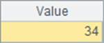

2.6.4 Reseting table sequences
Using reset function, you
can empty a table sequence while retaining its data structure:
|
|
A
|
|
1
|
=demo.query("select
* from STUDENTS")
|
|
2
|
>A1.reset()
|
Resetting a table sequence can remove useless records
and release the memory:
